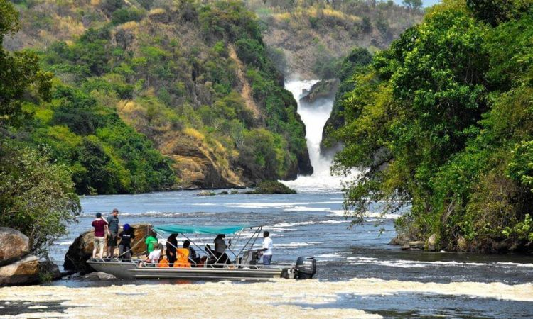

Instagram Gallery
Follow us on Instagram @AventuraToursandTravelug for real traveler moments.



Founded in the heart of Kampala, Aventura Tour and Travel is a locally owned travel company dedicated to showcasing the beauty, culture, and adventure of Uganda and East Africa. We believe travel should be personal, immersive, and unforgettable — and that’s exactly what we deliver.
To create meaningful travel experiences that connect people to places, cultures, and stories — while supporting local communities and preserving natural heritage.
Founder & Lead Guide - With 15+ years of experience, George brings deep knowledge and passion for Uganda's wildlife and culture.
Travel Coordinator - Shifrah ensures every itinerary is smooth, personalized, and unforgettable.
Operations Manager - Henry keeps everything running behind the scenes, from logistics to customer care.
We're not just tour operators — we're storytellers, explorers, and proud ambassadors of East Africa. Whether you're a solo traveler, couple, or group, we'll craft a journey that fits your style, pace, and budget.
Aventura Tours and Travel is your trusted travel partner for authentic, affordable, and unforgettable experiences. We specialize in wildlife safaris, cultural immersions, weekend getaways, and custom gigs across East Africa.
| Destination | Highlights |
|---|---|
| Bwindi Forest | Gorilla trekking, rainforest hikes |
| Jinja | Source of the Nile, rafting |
| Lake Bunyonyi | Canoeing, island hopping |
| Kampala | Markets, museums, nightlife |
“The gorilla trek was life-changing. Aventura Tours and Travel made it seamless!” Emma, Australia
“We felt safe, inspired, and cared for every step of the way.” James & Linda, UK
Follow us on Instagram @AventuraToursandTravelug for real traveler moments.

Ready to explore? Choose your tour and book in minutes.
Book Now Talk to an Expert